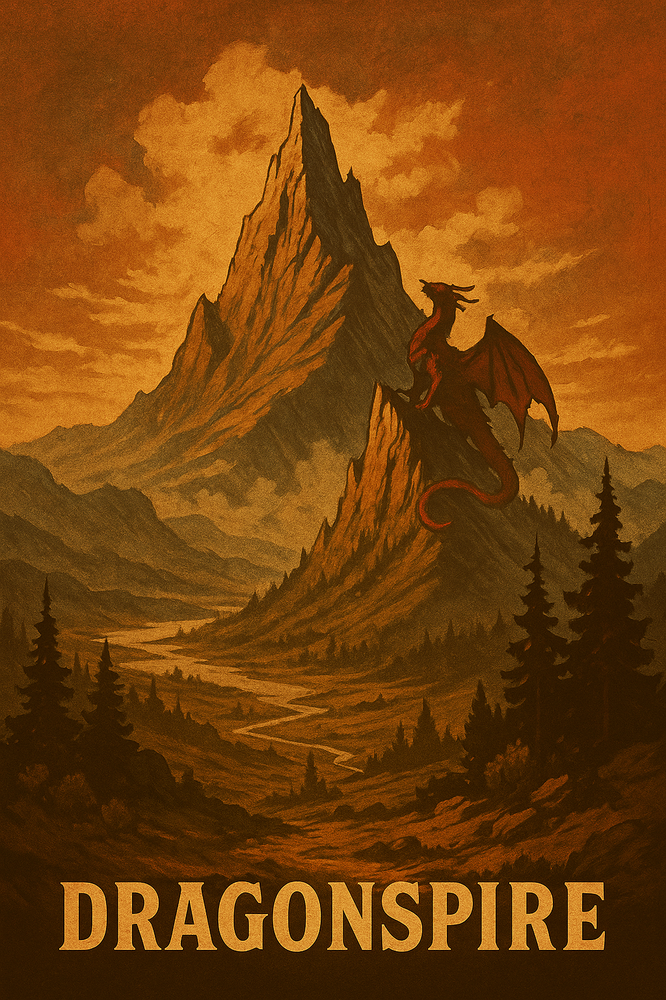
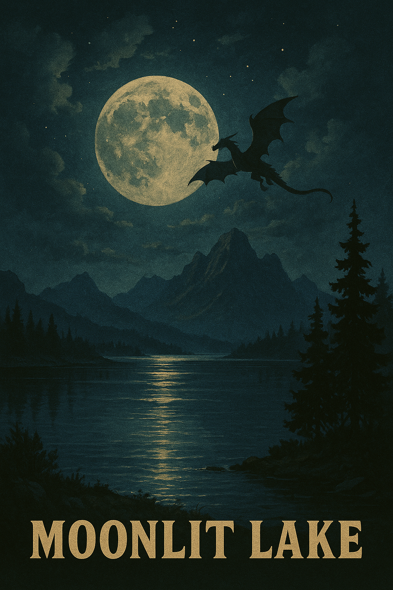

Welcome to LoreMaps - a living atlas for storytellers.
Choose a map from any year mark your own locations and write the tales that unfold there.
Watch the world grow as collaborators add their own histories, legends, and secrets to the same map.


Mysterious Realms
Realm
Description
Danger Level
Dragonspire Peak
A mountain so high its tip pierces the clouds; said to be home to ember-breathing beasts.
High
Moonlit Lake
A serene body of water that glows under the full moon, revealing visions of the past.
Low
Historical Maps & Locations
Year
Location
Notable Event
1899
Crimson Ridge
Final stand of the Dust Veil Outlaws during the frontier's last days.
1900
Silverhorn Valley
First recorded gathering of the wandering storyteller caravans.
1902
Hollow Creek
Discovery of the Whispering Stones by local ranchers.